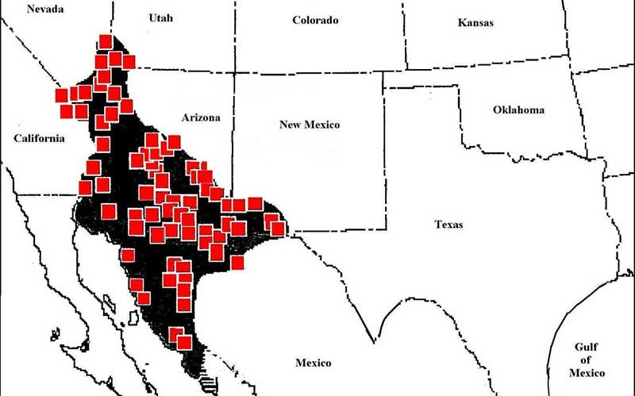
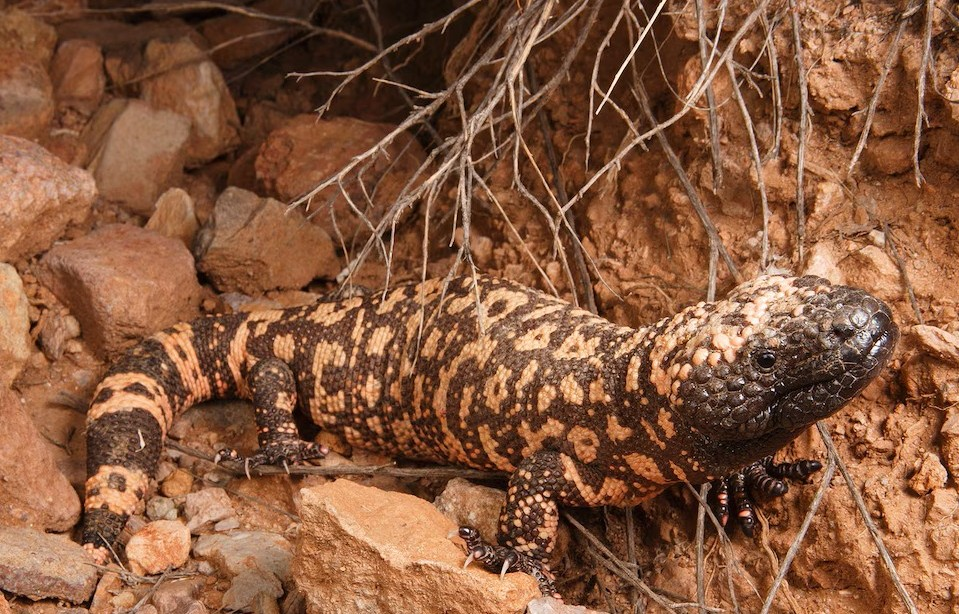

Description
The Gila monster is a large lizard native to the deserts and semiarid regions of the southwestern United States and northwestern Mexico. Despite its intimidating name, the Gila monster is not an aggressive predator and spends the majority of its life hidden underground or inside shelters. [1][2]
It is one of only a small number of venomous lizard species in the world. Unlike venomous snakes, which typically inject venom through hollow fangs, Gila monsters have grooved teeth in their lower jaws. Venom produced by glands in the lower jaw enters grooves associated with these teeth and is introduced into a bite as the animal grips and chews. [1]
Gila monsters are also the largest lizards native to the United States, reaching approximately 56 centimeters (22 inches) in total length. Their bodies are covered in distinctive bead-like scales and contrasting black-and-pink, orange, or yellow markings. [1]
Global Demographics & Habitat

